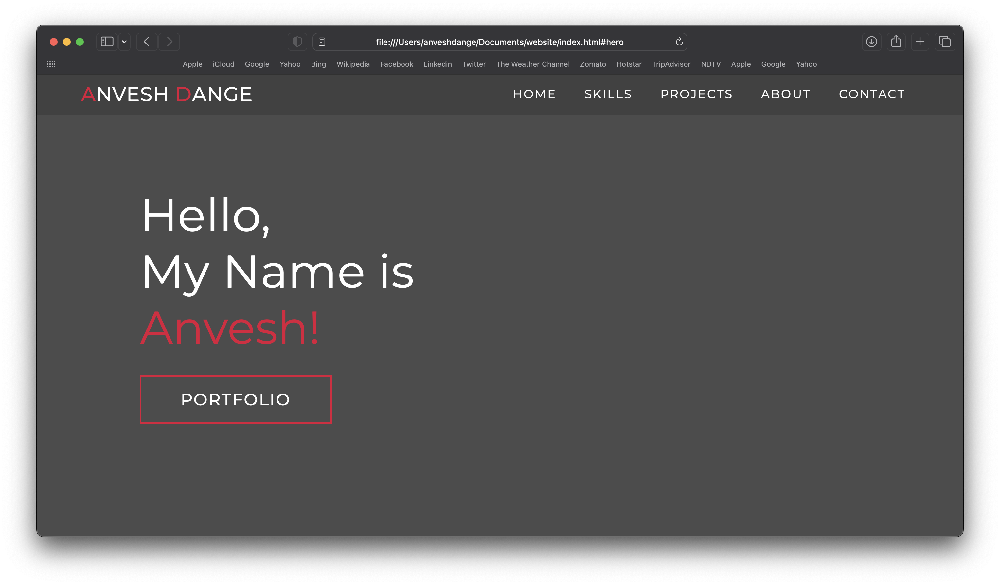
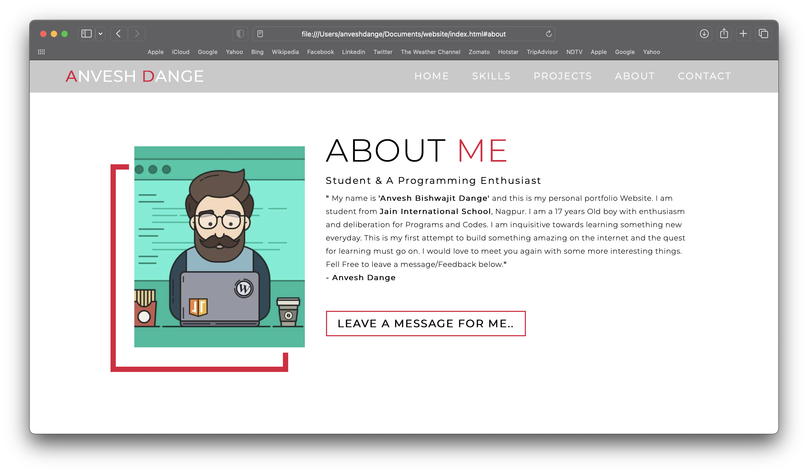

“ The secret to change is to focus all of your energy, not on fighting the old, but on building the new. ”
~ Socrates.
Some History
Portfolio Websites are something every Computer Science student will create someday. There are many things which are supposed to be done to create a website like learning HTML, CSS, Javascript.
My Journey of creating a portfolio website started somewhere in the year 2021 when I was in my 12th Grade. I was very fond of computers from a very early stage. I loved to tinker and figure out how things would work. Youtube was my best teacher then & still is. As a novice there were not many option for me to learn about computers. At that time , I knew Python Programming and some HTML, CSS. Hence, I chose to learn Web Development. I started watching youtube videos on web development.
Since, I had no guidance or a straight roadmap, I learned React.js before learning Javascript or even CSS completely. It was then I realised that I should not leave my basics. I started to learn CSS and Javascript first.
In the second half of 2021, I programmed my first ever portfolio website in Pure HTML and vanilla Javascript. It was a big deal for a student in this high school to have a portfolio website. But I was motivated by the curiosity of the technology rather getting job in web dev.
Images of Historic Portfolio
The Website was a One Page Website. Here are some glimses. 
Hero Page of my Historic Portfolio

“About me” page of my portfolio
This website was hosted for free on Google Drive and a free service called drive to web which can host any static website present on one’s Google Drive. Here is the code for the website.
Need for New ?
I have grown since I built my Portfolio. I’ve been reading many blogs from other developers who are doing great work in their fields. There are many reasons that made me convinced for a blog style portfolio.
-
Blogs will help me document my entire journey from here on. There have been times when I was lost in learning new stuff that I forgot how far I’ve come. Documenting would help me track that distance.
-
Keeping a blog is a good way to write tutorials or projects documentation and will help me in the future for writing a thesis or any technical/scientific document.
-
I am a person who procastinates a lot. I want to change this habit and be motivated to learn. I believe writing a blog will help me keep myself motivated when a hard topic strikes. Watching myself conquer topics and document it will help for sure.
Expectations
To be honest, I don’t know if I would be capable to post quite often. I will try to write blogs and tutorials of the things I would be learning in the future in the field of AI.
This is my first blog so went a little longer than expected. But keeping in mind the tight schedule a college going student like me has, I will keep tutorials short. (or maybe increase my typing speed 😉)
That’s it for now. See you in the tutorials !!